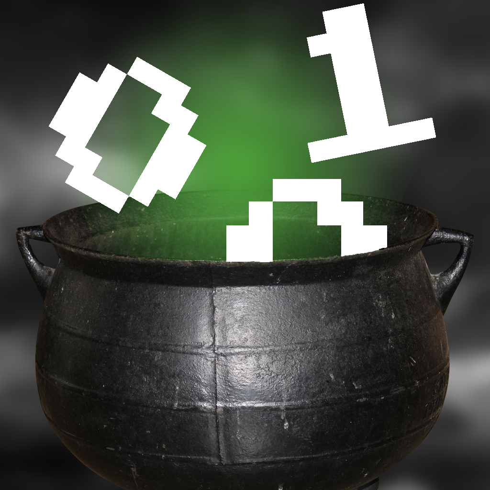

Fawn Cleveland's Game Dev Portfolio
Welcome to my project showcase! This is a small collection of my personal favorite projects I've worked on
About Me
I'm Fawn Cleveland, a full stack Software and Game Developer.
I graduated near the end of 2019, so my whole career has been
a little all over the place. Despite getting bounced around,
my passion and goal in life has always been Game Development.
Games are the perfect mix of artistic skill and technical prowess
to create emotions not possible in any other medium.
My positions at Fortem and Dealersocket were great opportunities to
expand my skillset and learn how to work in a professional environment.
In the short time I was at Fortem I had already taken over the lead for
a project and taught the rest of my team how to work with it
and the language itself it was written in.

If you'd like to contact me, the best method is through my
Discord server which you can access by clicking the image above.
I'll also respond via my Email or LinkedIn below, but with varying speed
Email: FawnCleveland@gmail.com
LinkedIn: Fawn-Cleveland